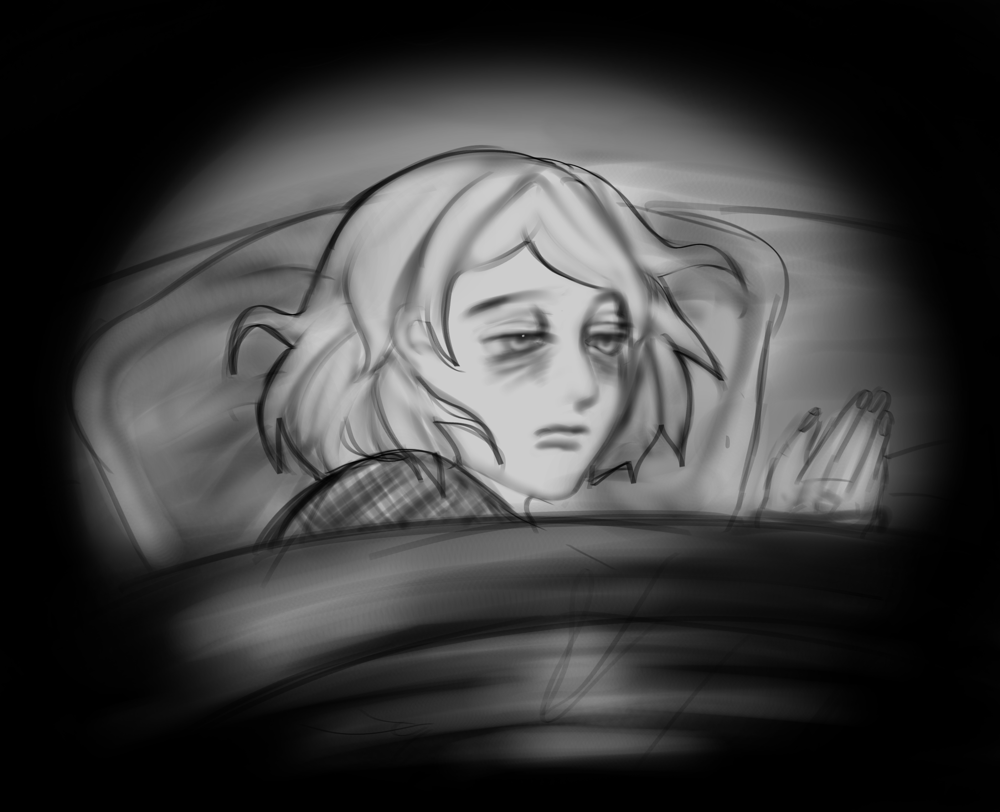

I haven't been able to sleep well these past months. I keep having really, really weird dreams.
< BACK NEXT >
Disclaimer; There are jumpscares in this game! When a jumpscare is about to happen, this symbol will show up Σ [°ロ°] Whenever it pops up, click it to skip the jumpscare!